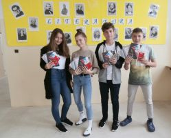

"Učiteľ ti môže otvoriť dvere, ale vstúpiť do nich musíš ty sám."
Ďakujeme aj za tvoje 2%
- Tlačivo Potvrdenie o zaplatení dane z príjmov zo závislej činnosti
- Tlačivo Vyhlásenie o poukázaní podielu zaplatenej dane z príjmov fyzickej osoby
Informácie k návratu do školy 8.2.2021
Milí rodičia,
Škola sa otvára pre žiakov ročníkov 1. - 4. Podmienkou je negatívny test alebo doklad o výnimke.
V pondelok ráno pri vstupe do školy je potrebné predložiť "Vyhlásenie o bezinfekčnosti", ktorého prílohou je kópia negatívneho testu na COVID-19 (alebo kópia dokladu o výnimke). V prípade, že si tlačivo neviete vytlačiť, bude k dispozícii pri vstupe do školy. Ďalšou možnosťou je vyplnenie elektronického tlačiva prostredníctvom Edupage, s naskenovanou alebou odfotenou prílohou negatívneho testu.
- Tlačivo "Vyhlásenie o bezinfekčnosti" na stiahnutie
- Návod na vyplnenie "Vyhlásenia o bezinfekčnosti" na EduPage
Všetci žiaci, ktorých rodičia triednym učiteľkám avizovali nástup svojho dieťaťa v pondelok do školy, sú prihlásení na stravovanie. V prípade akejkoľvek zmeny dieťa odhlasuje zo stravy rodič.
Touto cestou Vás prosíme o dodržiavanie dvojmetrovej vzdialenosti a správne nasadenie rúška v areáli školy.
V prípade, ak máte akékoľvek otázky radi Vám ich zodpovieme prostredníctvom emailu: szaboovas@rozmarinkakn.sk alebo telefonicky počas pracovných dní: 0915 799 373 (v prípade neodkladných otázok počas víkendu: 0949691199).
Ďakujeme za spoluprácu a želáme pekný víkend
Vedenie školy
Poďakovanie
A opäť je to športová činnosť detí a mládeže, ktorú gd-Team podporil v Športovom klube FLORBALO, ktorý pôsobí v rámci Základnej školy Rozmarínová ul. 1 v Komárne.
Ďakujeme gd-Team za sponzorstvo pre náš ŠK Florbalo.
Ukončili sme 1. polrok
| Máme za sebou prvý polrok. Ukončený bol netradične a to z viacerých aspektov. | |
|
|
| Touto cestou ďakujeme učiteľom za ich prácu a rodičom za pomoc a spoluprácu. Aj táto doba nám ukázala, že naše svety sú prepojené viac, ako sme si možno doteraz uvedomovali. Vzájomne si nazeráme do obývačiek so spoločným cieľom, ktorým je spokojnosť a rast každého jedného dieťaťa. A tak všetci spolu rastieme. | |
Informácie k návratu do školy v januári 2021
Epidemiologická situácia na Slovensku nedovoľuje otvárať školy v režime, ktorý bol naplánovaný pre Vianočnými prázdninami. Čakali sme až do poslednej chvíle, aby sme vám vedeli poskytnúť všetky relevantné informácie, podložené Ministerstvom školstva, vedy, výskumu a športu SR a našim zriaďovateľom Mesto Komárno. Pevne veríme, že všetky naplánované kroky sa stanú realitou a my sa s našimi žiakmi čoskoro uvidíme naživo v triedach. Zatiaľ želáme všetkým veľa trpezlivosti pri dodržiavaní opatrení a pevné zdravie.
11. - 15. januára 2021
Žiaci ročníkov 1. - 4.
- učia sa dištančne (online), rozvrhy k dištančnému vzdelávaniu sú zverejnené na Edupage, prípadne vám ich poskytnú triedne učiteľky
- rozvrh žiakov je zostavený tak, aby zohľadňoval vekové osobitosti žiakov a zároveň aby zohľadňoval odporúčania Štátneho pedagogického ústavu
- rovnako je prispôsobená dĺžka prestávok medzi jednotlivými hodinami, preto časový harmonogram vyučovacích hodín je nasledovný:
- vyučovacia hodina 8:00 - 8:45 (8:45 - 9:00 prestávka)
- vyučovacia hodina 9:00 - 9:45 (9:45 - 10:00 prestávka)
- vyučovacia hodina 10:00 - 10:45 (10:45 - 11:00 prestávka)
- vyučovacia hodina 11:00 - 11:45 (11:45 - 12:00 prestávka)
- vyučovacia hodina 12:00 - 12:45
- dištančné vzdelávanie bude prebiehať prostredníctvom programu MS Teams, kde budú realizované online hodiny a učitelia sem budú zasielať zadania domácich úloh
- zopár rád pre našich najmenších, ktoré pomôžu pri dištančnom vzdelávaní:
- Na online hodiny sa pripájaj včas, aby si niečo nezmeškal.
- Počas prestávok sa najedz, poprechádzaj po izbe, ponaťahuj sa.
- Po skončení online hodín si daj pauzu, obed a potom si vypracuj zadané úlohy a prepošli učiteľom, ak je to potrebné.
- Ak si s niečím nevieš dať rady, kontaktuj triedneho učiteľa alebo učiteľa predmetu, ktorý ti vie poradiť.
- Keď máš všetko spravené, svoj voľný čas venuj svojim záľubám.
ŠKD
- celodenná prevádzka ŠKD bude fungovať pre žiakov, ktorých rodičia pracujú v kritickej infraštuktúre alebo ich práca sa nedá vykonávať z domu
- v prípade záujmu je deti potrebné prihlásiť vopred u triednych učiteliek, aby sme dokázali zabezpečiť protiepidemiologické a personálno - prevádzkové podmienky.
- bufet v tomto týždni v prevádzke nebude, preto je potrebné deťom zabaliť dostatočné množstvo stravy a nápojov
- obedy pre deti budú zabezpečené od utorka
- ŠKD bude otvorený od 6:00 do 16:00 hod.
Žiaci ročníkov 5. - 9.
- pokračujú v dištančnom vzdelávaní rovnako ako pred Vianočnými prázdninami, rozvrh hodín zostáva nezmenený
Kapitoly z dejín mesta Komárno – on-line kvíz
Rozmarínka opäť bodovala!
Aj tento rok sa naši deviataci zúčastnili súťažného kvízu "História Komárna vzdialená i blízka", ktorý mimoriadne prebiehal on-line formou prostredníctvom webovej stránky Regionálneho osvetového strediska v Komárne v spolupráci so Štátnym archívom. Tému Kapitoly z dejín mesta Komárno zvládol náš tím bravúrne a obsadil 1. miesto!
Srdečne teda blahoželáme členom tímu Martinke Illášovej, Dáške Koprdovej a Palimu Spišiakovi, ale aj Adamovi Csernyanszkému, ktorý družstvo dopĺňal ako náhradník.
Fungovanie školského psychológa v čase dištančného vzdelávania.png)
Koronavírus, alebo COVID-19, je teraz hlavným problémom v celej Európe. Momentálny stav nenaznačuje ukončenie núdzového a zároveň krízového stavu, a naďalej nebude možné zabezpečiť štandardnú starostlivosť a osobné poradenstvo pre intaktné deti a žiakov so ŠVVP.
Pomoc rodičom
Milí rodičia,
Výskumný ústav detskej psychológie a patopsychológie zverejnil na svojom webovom sídle vudpap.sk viaceré metodické materiály, ktoré sú určené učiteľom, školským špeciálnym pedagógom a sociálnym pedagógom, školským psychológom, asistentom učiteľa, ale aj rodičom a žiakom. Niektoré z nich vám ponúkame aj na našej webovej stránke k nahliadnutiu.
Učíme sa doma
Nezvyčajné situácie si vyžadujú nezvyčajné riešenia. Ako ale zvládnuť dva týždne s deťmi doma bez školy?
Nie je naším cieľom, aby ste v nadchádzajúcich dňoch plne nahradili učiteľov a príliš tlačili na deti. Buďte ich sprievodcami a našou predĺženou rukou počas prerušeného vyučovania v škole. Učitelia budú deťom zadávať úlohy prostredníctvom Edupage a Bezkriedy. Ak si s niečím nedokážete poradiť, neváhajte ich osloviť prostredníctvom emailu (všetky emailové adresy sú uvedené na web stránke školy www.rozmarinkakn.sk).
Prirpravili sme pre vás mnoho odkazov na výučbové stránky na internete ...čítať ďalej
Prírodné vedy na Rozmarínke v Komárne deti fascinujú
Týždeň vedy a techniky na Rozmarínke